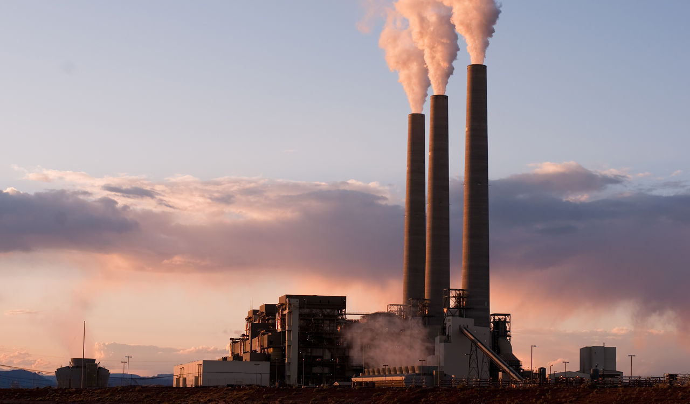

Our future on earth is uncertain and our planet is in jeopardy.
We face complex problems such as climate cange, vast
exploitation of natural resources, popular growth, scarcity of
food and water, rising sea levels, among many others. We
must apply Sustainable Development in order to sustain our
planet for future generations.
Sustainable Development
It refers to the development which meets the needs of the present without
compromisisng the ability of future generations to meet their own needs (United Nations, 1987).
You can Help!
We all can contributre to have a better world if we follow the 3R's of sustainable development:
- Reuse - Find new ways to use items instead of throwing them away!
- Recycle - Separate the item s you are disposing of (plastic, paper, glass, organic)
- Reduce - The best way to prevent pollution is not using materials that cause pollution:
bring your own bags to the grocery store, ride a bike, turn off the lights!